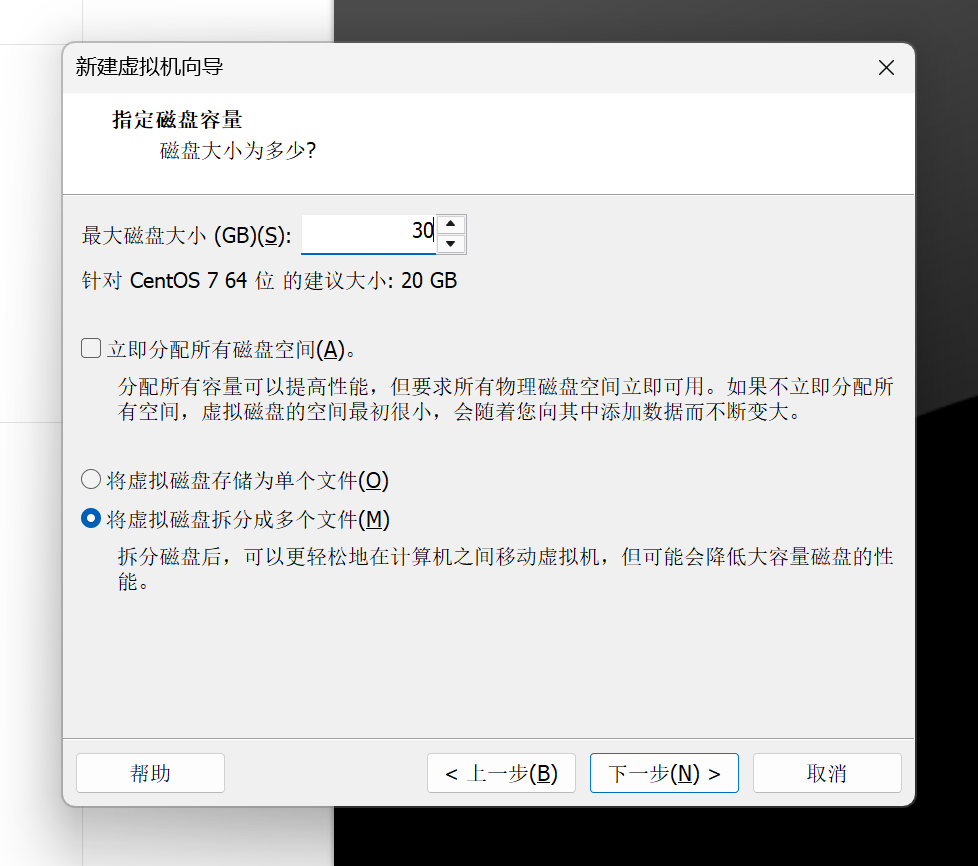
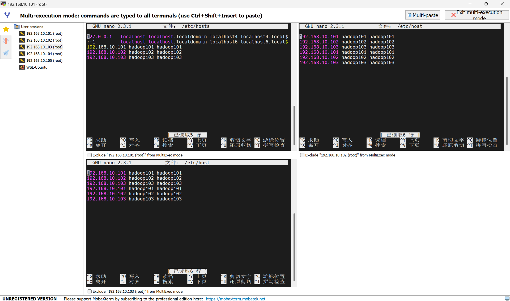
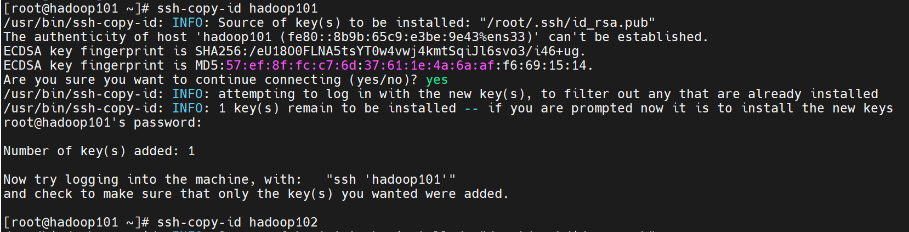
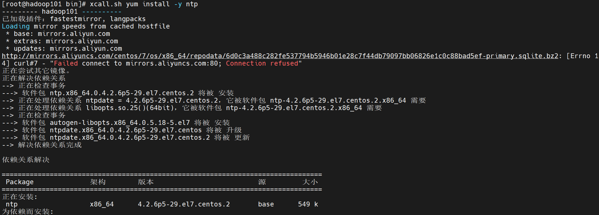
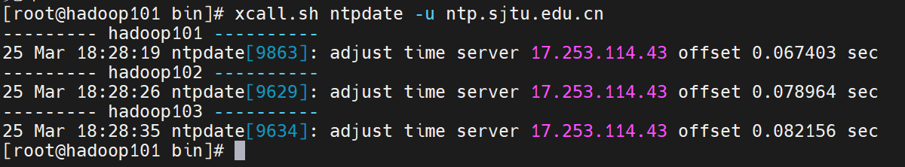
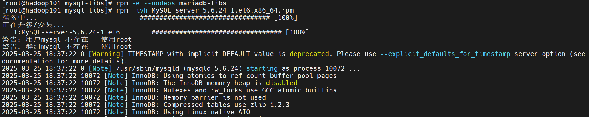
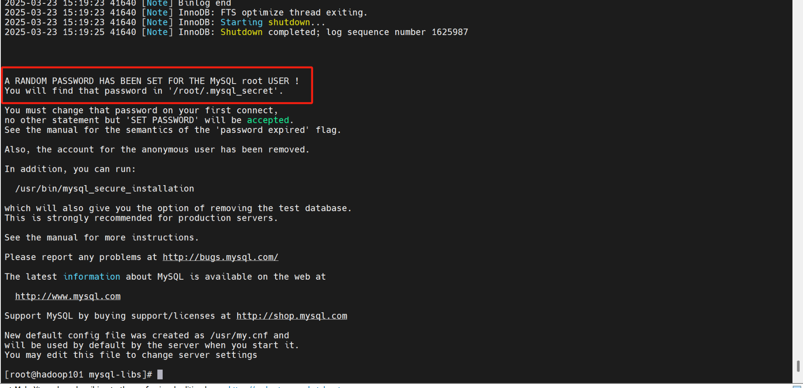
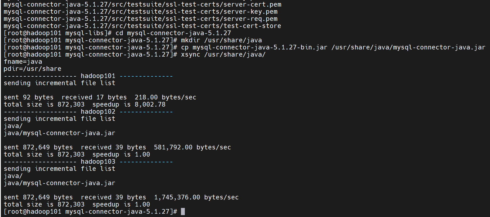
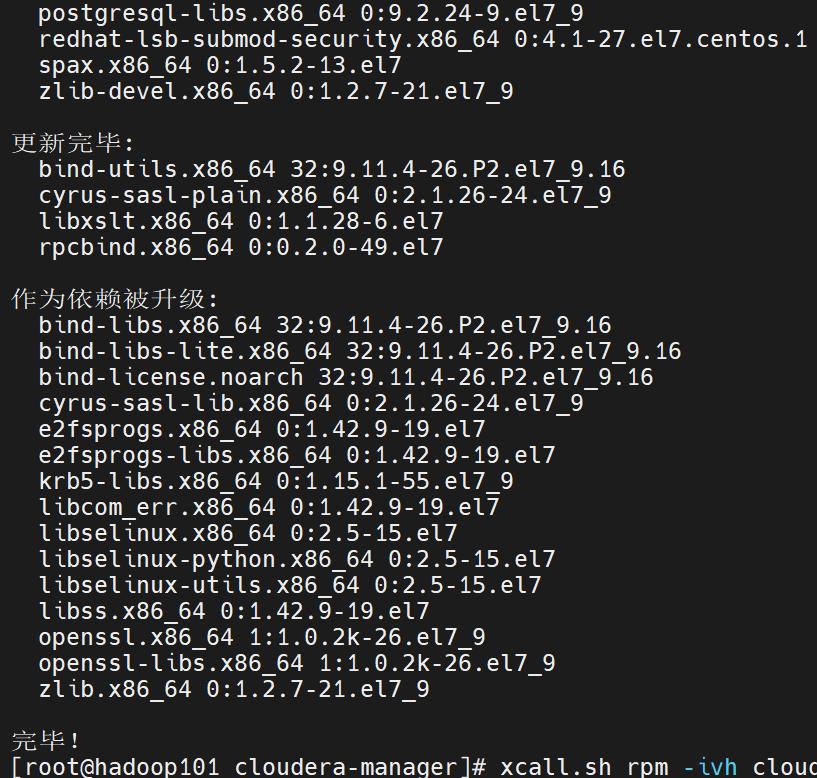

CDH
1、CDH简介
1、CDH（Cloudera's Distribution Including Apache Hadoop）是Cloudera公司推出的一款企业级大数据平台发行版，它集成了Apache Hadoop生态系统中的核心组件及周边工具，旨在简化大数据集群的部署、管理和运维。

（1）CDH的核心组件
- 分布式存储：HDFS
- 资源管理：YARN
- 计算框架：MapReduce（传统）、Spark（内存加速）、Hive（基于MapReduce/Tez）、Impala（MPP架构）、Spark Streaming、Flink、HBase（基于HDFS的分布式列存储）
（2）CDH的管理层
- CDH的管理层由Cloudera Manager（CM）提供，Cloudera Manager是一个集中式管理工具，提供图形界面和API
- CM的主要作用有：
- 安装与部署：自动化安装CDH组件。
- 配置管理：统一管理服务配置。
- 监控与诊断：实时监控集群健康状态、性能指标。
- 服务管理：启动、停止、重启服务。
- 升级与维护：支持滚动升级。
- CM的核心组件有：
- Server：运行CM服务，协调管理任务。
- Agent：运行在每个节点上，执行CM Server的指令。
- Database：存储CM的元数据（如MySQL、PostgreSQL）。
2、部署CDH
（1）准备虚拟机
- 虚拟机准备的大致流程请参考k8s部署中的相关部分（k8s），同时注意以下需要修改的地方
- 对于hadoop101，由于它需要安装cdh server，所以需要更大的内存，这里我们设置内存为4G，磁盘容量为40G


- 对于其它两台机器，按照如下的配置，即设置内存为2G，磁盘容量为30G


- 准备虚拟机的其它步骤均与k8s集群部署中相同，这里不再重复，还有一点需要注意的是主机名配置，这里我的三台虚拟机的主机名设置为了hadoop101、hadoop102、hadoop103，主机名的配置位置在如下步骤
- 接着我们依然和之前k8s部署的时候一样（k8s），使用MobaXterm连接每台虚拟机，对每台机器配置名称与ip的对应关系
- 先点击multi-execution，以同时对三台虚拟机进行相同的操作，复制完命令后可以通过右上角的multi-paste进行同步粘贴
- 编辑配置文件
nano /etc/hosts
- 输入以下内容，将主机名与IP关联，这里的ip为之前自己所设置的虚拟机ip，需要针对自己的情况做修改
192.168.10.101 hadoop101 hadoop101
192.168.10.102 hadoop102 hadoop102
192.168.10.103 hadoop103 hadoop103
- 输入完毕后使用ctrl+x，然后按y，接着再回车即可退出文件编辑


- 然后我们退出同步操作界面，回到hadoop101的连接界面，配置其对其它节点的免密登录
- 输入下面的命令，并连续按三次enter键
ssh-keygen -t rsa
- 接着依次输入下面的命令，每输入一条命令后输入yes，再输入虚拟机的密码，这个密码即我们之前在虚拟机配置时设置的密码，这样就配置了hadoop101对其它节点的免密登录
ssh-copy-id hadoop101
ssh-copy-id hadoop102
ssh-copy-id hadoop103


- 上传所需脚本scripts至hadoop101，上传方式为直接将该文件夹拖拽到MobaXterm左侧的文件栏中
- 授予脚本权限，接着进入脚本目录并测试是否可以使用
chmod 77 2.scripts/*
cd 2.scripts/
sudo cp xsync /bin
sudo cp xcall.sh /bin
xsync
- xsync脚本用于同步文件或目录到其他主机，该脚本接收一个文件路径作为输入，提取文件名及其绝对路径，然后将文件复制到每个远程主机的相同目录下。
- xcall.sh脚本用于在多台主机上批量执行相同命令，脚本通过for循环遍历主机列表，使用ssh命令以当前用户的身份登录到每个主机，并执行脚本传入的所有参数作为命令
- 我们先更换源以便后续的各种下载操作，这里使用xcall.sh，给三台虚拟机换源
xcall.sh mv /etc/yum.repos.d/CentOS-Base.repo /etc/yum.repos.d/CentOS-Base.repo.backup
xcall.sh curl -o /etc/yum.repos.d/CentOS-Base.repo http://mirrors.aliyun.com/repo/Centos-7.repo
- 接着使用ntp同步三台虚拟机的时间
xcall.sh yum install -y ntp
xcall.sh ntpdate -u ntp.sjtu.edu.cn


（2）安装JDK
- 接下来我们在每个节点上安装JDK
- 我们依然在hadoop101上进行操作，先进入/opt目录下创建两个文件夹以存放资源包
cd /opt
mkdir module
mkdir software
- 而后在目录/opt/module下上传文件夹 1.CDH6，上传方式为直接将该文件夹拖拽到MobaXterm左侧的文件栏中，注意这里需要先进入目录/opt/module下再上传
- 接着进入所上传的文件目录下
cd /opt/module/1.CDH6/
- 安装JDK
rpm -ivh oracle-j2sdk1.8-1.8.0+update181-1.x86_64.rpm

- 接着编辑环境变量
- 进入文件编辑页面
nano /etc/profile.d/my_env.sh
- 添加如下内容
export JAVA_HOME=/usr/java/jdk1.8.0_181-cloudera
export CLASSPATH=.:$CLASSPATH:$JAVA_HOME/lib
export PATH=$PATH:$JAVA_HOME/bin
- 输入完毕后使用ctrl+x，然后按y，接着再回车即可退出文件编辑
- 应用更改并检查是否生效，能看到java的版本就是生效了
source /etc/profile.d/my_env.sh
java -version
- 分发环境
xsync /usr/java/
xsync /etc/profile.d/my_env.sh

- 使用xcall.sh，以在每台虚拟机上应用更改
xcall.sh source /etc/profile.d/my_env.sh
- 使用脚本查看每个节点上的应用是否生效
xcall.sh java -version
（3）配置mysql
- 接下来我们配置mysql
- 我们首先安装mysql所需的依赖
yum install -y autoconf libaio

- 接着下载mysql的安装包并安装
wget https://downloads.mysql.com/archives/get/p/23/file/MySQL-shared-compat-5.6.24-1.el6.x86_64.rpm
wget https://downloads.mysql.com/archives/get/p/23/file/MySQL-shared-5.6.24-1.el6.x86_64.rpm
rpm -ivh MySQL-shared-5.6.24-1.el6.x86_64.rpm
rpm -ivh MySQL-shared-compat-5.6.24-1.el6.x86_64.rpm

- 安装MySQL服务端
cd /opt/module/1.CDH6
unzip mysql-libs.zip
cd mysql-libs/
rpm -e --nodeps mariadb-libs
rpm -ivh MySQL-server-5.6.24-1.el6.x86_64.rpm



- 查看初始的随机密码，用于后续登录
cat /root/.mysql_secret
- 查看mysql状态并启动
service mysql status
service mysql start
service mysql status
- 接着安装mysql的客户端
rpm -ivh MySQL-client-5.6.24-1.el6.x86_64.rpm
- 登录mysql并修改密码，这里mysql的用户名是root，密码即刚刚查看的密码，也就是这里的vlEM7tomcvfOJMGR，需要替换为自己查看到所生成的随机密码
mysql -uroot -pvlEM7tomcvfOJMGR
SET PASSWORD=PASSWORD('000000');
exit
- 使用修改后的密码进行登录，可以进行一些基本的mysql操作，注意，语句use mysql;是必须执行的，后续操作需要用到，而其它的查询语句可以不执行，只是为了验证mysql的基本功能
mysql -uroot -p000000
show databases;
use mysql;
show tables;
desc user;
select User, Host, Password from user;
- 而后配置只要是root用户+密码，在任何主机上都能登录MySQL数据库
update user set host='%' where host='localhost';
delete from user where host!='%';
flush privileges;
exit;

（4）安装CM
- 接下来我们安装CM
- 首先进入mysql，并创建各组件需要的数据库，而后退出
mysql -uroot -p000000
GRANT ALL ON scm.* TO 'scm'@'%' IDENTIFIED BY 'scm';
CREATE DATABASE scm DEFAULT CHARACTER SET utf8 DEFAULT COLLATE utf8_general_ci;
CREATE DATABASE hive DEFAULT CHARSET utf8 COLLATE utf8_general_ci;
CREATE DATABASE oozie DEFAULT CHARSET utf8 COLLATE utf8_general_ci;
CREATE DATABASE hue DEFAULT CHARSET utf8 COLLATE utf8_general_ci;
CREATE DATABASE sentry DEFAULT CHARACTER SET utf8 DEFAULT COLLATE utf8_general_ci;
exit;
- 接着解压mysql的依赖包，并将mysql-connector-java-5.1.27-bin.jar拷贝到/usr/share/java路径下，而后重命名
cd /opt/module/1.CDH6/mysql-libs
tar -zxvf mysql-connector-java-5.1.27.tar.gz
cd mysql-connector-java-5.1.27
mkdir /usr/share/java
cp mysql-connector-java-5.1.27-bin.jar /usr/share/java/mysql-connector-java.jar
xsync /usr/share/java/

- 我们再创建一个cloudera-manager目录,并将CDH安装文件移动到该目录下
mkdir /opt/cloudera-manager
cd /opt/module/1.CDH6
tar -zxvf cm6.3.1-redhat7.tar.gz
cd cm6.3.1/RPMS/x86_64/
mv cloudera-manager-agent-6.3.1-1466458.el7.x86_64.rpm /opt/cloudera-manager/
mv cloudera-manager-server-6.3.1-1466458.el7.x86_64.rpm /opt/cloudera-manager/
mv cloudera-manager-daemons-6.3.1-1466458.el7.x86_64.rpm /opt/cloudera-manager/
- 安装CM，先将安装包进行分发，而后再使用xcall.sh在三台虚拟机上进行安装
cd /opt/cloudera-manager/
xsync /opt/cloudera-manager/
xcall.sh rpm -ivh /opt/cloudera-manager/cloudera-manager-daemons-6.3.1-1466458.el7.x86_64.rpm

- 接下来安装前置环境，使用xcall.sh脚本在所有虚拟机上进行安装
xcall.sh yum install bind-utils psmisc cyrus-sasl-plain cyrus-sasl-gssapi fuse portmap fuse-libs /lib/lsb/init-functions httpd mod_ssl openssl-devel python-psycopg2 MySQL-python libxslt
- 安装卡在下面的步骤时，输入y再回车即可（表示yes）

- 而后安装cm agent，同样地，使用xcall.sh在每台虚拟机上执行安装
xcall.sh rpm -ivh /opt/cloudera-manager/cloudera-manager-agent-6.3.1-1466458.el7.x86_64.rpm
- 接着修改agent的配置文件，主要为了让所有节点都知道server是谁
nano /etc/cloudera-scm-agent/config.ini
- 修改下面的部分的值为hadoop101
server_host=hadoop101
- 输入完毕后使用ctrl+x，然后按y，接着再回车即可退出文件编辑

- 然后使用脚本分发该配置文件到所有节点
xsync /etc/cloudera-scm-agent/config.ini
- 然后我们继续在hadoop101上安装server
rpm -ivh /opt/cloudera-manager/cloudera-manager-server-6.3.1-1466458.el7.x86_64.rpm
- 接下来我们上传CDH包到parcel-repo，parcel-repo就相当于CDH的本地仓库
cd /opt/module/1.CDH6
mv CDH-6.3.2-1.cdh6.3.2.p0.1605554-el7.parcel* /opt/cloudera/parcel-repo
mv manifest.json /opt/cloudera/parcel-repo
cd /opt/cloudera/parcel-repo
mv CDH-6.3.2-1.cdh6.3.2.p0.1605554-el7.parcel.sha1 CDH-6.3.2-1.cdh6.3.2.p0.1605554-el7.parcel.sha

- 然后我们修改CDH的数据库文件，让它指向mysql
nano /etc/cloudera-scm-server/db.properties
- 在com.cloudera.cmf.db.type=mysql这一行下添加如下内容
com.cloudera.cmf.db.host=hadoop101:3306
com.cloudera.cmf.db.name=scm
com.cloudera.cmf.db.user=scm
com.cloudera.cmf.db.password=scm
com.cloudera.cmf.db.setupType=EXTERNAL
- 注释掉最后一行：com.cloudera.cmf.db.setupType=INIT
- 输入完毕后使用ctrl+x，然后按y，接着再回车即可退出文件编辑
- 接着我们可以使用如下命令导入数据，要求输入密码，密码即为我们在之前文件中所配置的参数：scm
/opt/cloudera/cm/schema/scm_prepare_database.sh mysql scm scm
- 这里还需要将所有节点上的防火墙关闭，使用xcall.sh关闭每台虚拟机上的防火墙
xcall.sh systemctl stop firewalld
- 最后，我们在主节点启动server，即在hadoop101上执行下面的命令
systemctl start cloudera-scm-server
- 并使用xcall.sh在所有节点启动agent
xcall.sh systemctl start cloudera-scm-agent
- 在浏览器访问下面的ip即可看到CDH的web界面，注意这里的ip地址需改为自身的hadoop101虚拟机所配置的ip地址，后面的端口号不用改变
（5）CDH集群部署
- 使用admin作为用户名和密码进行登录

- 点击继续
- 勾选“接受”，点击继续

- 选择免费版，点击继续

- 点击继续

- 集群名称使用默认的Cluster 1，再点击继续
- 选择当前管理的主机，并勾选全部的虚拟机，再点击继续
- 点击继续

- 等候安装完毕

- 接下来需要对网络环境以及主机性能进行检测，分别点击这两个按钮

- 经过检查后如果出现下面的警告，我们需要进行修复，我们点击“显示检查器结果”

- 可以看到警告的出现是由于下面的问题，直接按照它所给出的提示进行操作就可以了，这里均采用临时修改的方式

- 回到连接hadoop101的命令行，使用xcall.sh在所有虚拟机上修改所需配置
xcall.sh sysctl vm.swappiness=10
xcall.sh "echo never > /sys/kernel/mm/transparent_hugepage/defrag"
xcall.sh "echo never > /sys/kernel/mm/transparent_hugepage/enabled"
- 而后返回cdh的web页面，点击“重新运行”，便可以看到主机性能的检查也通过了，接着我们点击继续

- 接下来就可以安装各种组件了，我们先以安装基础hadoop所需的组件为例，选择“自定义服务”并勾选HDFS、YARN、Zookeeper

- 每台虚拟机的角色分配如下

- 审核更改中的配置均使用默认配置，点击继续
- 接着等待安装完毕即可

- 安装完成

- 然后我们就可以进入到cdh的界面了
- 这里所存在的警告大多是因为当前集群的规模过小了，点击配置可以看到具体问题，由于是实验环境，所以可以暂时忽略
- 这里我们就完成了CDH的配置，后续可以在CDH的web页面上继续添加大数据的各种组件